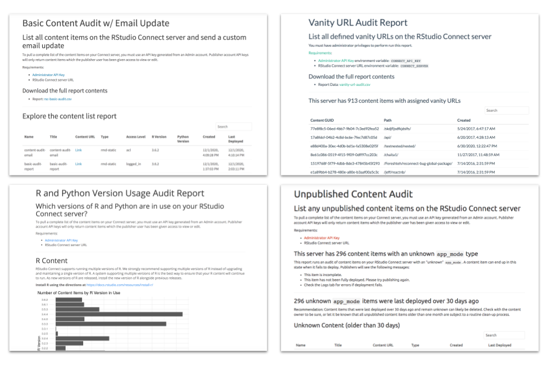

2020-12-16
RStudio Connect helps teams of all sizes operationalize their data science work, and provides a single point of access to data products for decision makers. In this release, we have emphasized features that will help address maturing DevOps requirements within organizations seeking to deploy and scale data science.
This release of RStudio Connect builds on the existing Server API, making experimental endpoints officially supported and introducing a brand new slate of API improvements based on feedback we’ve received from the community.

session$groups in Shiny applications … read moreNote: This release includes some deprecations and breaking changes. Please read more here, or review the release notes.
To receive email notifications for RStudio professional product releases, patches, security information, and general product support updates, subscribe to the Product Information list by visiting the RStudio subscription management portal.